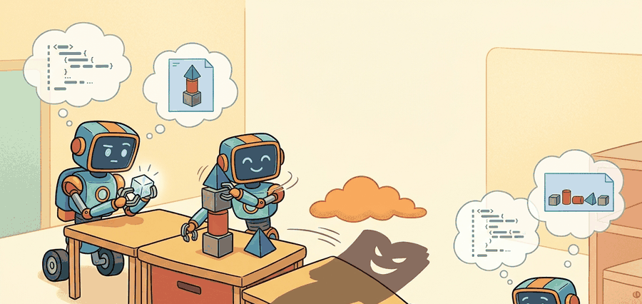

A Careful Control Loop

Read the figure as a generated-code safety boundary. Code as Policies is valuable only when generated functions are sandboxed, typed, checked against robot APIs, and traced from natural-language intent to executable motion calls.
Build And Evaluation Checklist
Depth and self-containment. This section must explain why generating code can be a better interface than generating free-text plans, and what extra safety and verification obligations that choice creates.
Production and evaluation contract. The key artifact is the generated program, the typed API surface it is allowed to call, the unit tests or runtime checks applied to it, and the execution result on the same episode.
For Code as Policies: LLMs that write robot code, name the language interface, grounded world state, executable action contract, and evidence artifact before trusting any claimed improvement.
For Code as Policies: LLMs that write robot code, write one evidence row recording instruction, world-state estimate, chosen action, verifier result, and failure label. Then identify which field would change first under command misunderstanding.
Code as Policies treats the LLM as a program synthesizer rather than as a pure step selector. The gain is compositionality; the cost is that unsafe or underspecified code can execute surprisingly fast.
This section shows why code generation is attractive for embodied control and why it only works when the runtime interface is narrow, typed, and testable.
The practical question is what kind of code the model should be allowed to write and how that code should be checked before touching the robot.
Generated code is powerful because it can bind perception, memory, and action in one program. It is dangerous for exactly the same reason.
Theory
Instead of selecting one symbolic action, the model emits a program $P$ over a robot API $\mathcal A$. The control loop becomes $$P = \phi_\text{LLM}(x, h_t), \qquad a_{t:t+H} = \operatorname{Exec}(P, \mathcal A, \hat s_t),$$ where safety now depends on the allowed API, runtime guards, and verification suite as much as on the model's semantic quality.
Code generation helps when tasks require loops, conditionals, and compositional reuse across subtasks. A free-text planner may say 'repeat until the drawer is closed'; a generated program can actually encode the loop condition. The downside is that the model can also generate brittle logic or unsafe API sequences if the execution environment is too permissive.
A good mental model is constrained program synthesis. The LLM writes a small controller inside a sandbox, not arbitrary Python with unrestricted side effects. The narrower the API and the clearer its contracts, the more useful and safer the generated code becomes.
Worked Example
Code Fragment 1 generates a tiny skill program over a restricted API and then validates that every called function is allowed. The point is to make the interface boundary concrete, not to celebrate raw text generation.
# Validate that generated code calls only approved robot API functions.
# Program generation is useful only when the execution surface is constrained.
# A whitelist is the smallest possible runtime guard.
generated_calls = ["detect('red_mug')", "pick('red_mug')", "place('tray')"]
allowed = {"detect", "pick", "place", "wait"}
safe = all(call.split("(")[0] in allowed for call in generated_calls)
print({"calls": generated_calls, "safe": safe})The expected output is a generated micro-program whose every call lies inside the approved API surface. The key fact is not only that `safe` is `True`, but that the plan has already been reduced to inspectable calls such as `detect`, `pick`, and `place`, which makes downstream verification possible.
Program-of-thought runtimes, sandboxed Python interpreters, and tool-calling APIs can wrap the same pattern in a few lines. They remove the string plumbing and schema parsing, but they do not remove the need for runtime guards, unit tests, and state-based verification.
Practical Recipe
- Expose a narrow API that names only the skills and queries the robot is allowed to call.
- Generate code into a sandbox or DSL rather than into unrestricted Python.
- Run static and runtime checks before sending any call to the robot.
- Log the generated program and the verifier result together.
- Treat repair and regeneration as first-class parts of the loop rather than as exceptional events.
The most common mistake is to let the generated code touch too much of the runtime surface. The model does not need file system access, shell access, or arbitrary network calls to solve a tabletop manipulation task.
A generated policy may combine `detect`, `pick`, and `place` with a retry loop that re-detects after slippage. That compositional pattern is much easier to express in code than as a list of flat symbolic actions, but only if the allowed functions are clean and testable.
Free-text plans make optimistic promises. Generated code makes those promises executable, which is either progress or a very efficient way to meet your safety team.
Recent work pushes from unrestricted code generation toward safer DSLs, repair loops, and verifier-guided synthesis. The open question is how expressive the language can be before the safety and debugging burden outweigh the compositional benefit.
If your model generated a loop or conditional, could you explain which runtime guard proves that the code will terminate or fail safely under missing detections?
Code generation changes the abstraction level of planning. Instead of choosing the next action only, the model can synthesize local control flow and data flow. That is why program-based interfaces often generalize better than step-wise prompts on long tasks with repeated patterns.
The cost is that verification must move closer to software engineering. You need typed signatures, unit tests, API whitelists, and runtime contracts, not just high-level task metrics. A generated program is a real artifact, and it deserves real software scrutiny before it reaches hardware.
| Tool or Library | Role in the Topic | Builder Advice |
|---|---|---|
| Sandboxed Python or a DSL | Generated control logic surface. | Use it when free-form text is too weak but unrestricted code is too risky. |
| Pydantic or JSON schema | Validation of generated arguments. | Use it when the generated program must pass typed objects to robot APIs. |
| ROS 2 actions | Execution target for generated procedures. | Use actions when generated code should call long-running, feedback-rich skills. |
| MoveIt 2 | Safe motion-planning backend. | Use it when generated code specifies high-level manipulation goals rather than trajectories. |
| Unit tests and replay harnesses | Program verification before execution. | Use them to catch invalid calls or wrong control flow before the robot moves. |
Code Fragment 2 stores the generated program and its verifier result in one record. That is the right unit for ablations because it lets you compare program quality, execution success, and repair frequency together.
- Save the generated program text or AST in the experiment artifact.
- Run signature checks, whitelist checks, and simple execution tests before deployment.
- Keep the generated program short enough that a human can audit it during development.
- If verification fails, route the error message back into a regeneration step rather than guessing a patch silently.
- Compare program-generation systems on the same API surface and same robot backend.
The expected output is an execution record that ties the literal generated program to the verifier outcome and the observed execution result. That linkage matters because code-generating agents often fail through argument misuse or illegal call order, and those errors are invisible if you keep only a task-success bit.
When code-based planners fail, separate semantic plan errors from software-interface errors. The model may understand the task but still misuse an argument order, forget a termination condition, or violate a runtime precondition.
Generated code is a strong embodied-planning interface only when the API surface is narrow, typed, and aggressively verified.
Design a five-function robot DSL for a tabletop domain and explain why each function belongs in the allowed set. Then list two functions that should remain unavailable to the LLM and why.
Liang et al. (2022). "Code as Policies: Language Model Programs for Embodied Control." arXiv.
This is the primary reference for using LLM-generated programs as embodied-control policies.
ROS 2 Documentation. 'Creating an action.'
ROS 2 actions are a practical target interface for generated high-level code in robot systems.
BehaviorTree.CPP Documentation. 'Integration with ROS2.'
Behavior trees are a strong comparison point when deciding whether generated code or explicit execution graphs are the better abstraction.